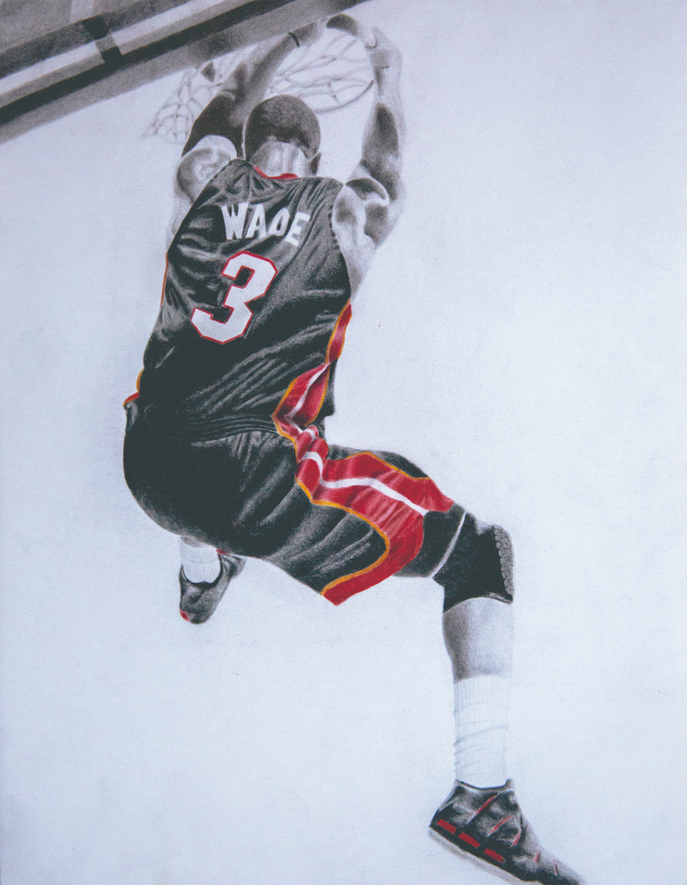

One of my favorite things to draw is people in motion. I really enjoy drawing the folds of the fabric and the fluidity of the human body. So, combining that with the NBA seemed like a natural pairing.
For this set of drawings, I decided to draw the team's jerseys in color while keeping the players in black and white. Even the best players will tell you that it's a team sport and no matter how great you are, you still need the support of everyone around you to succeed.
Personally, I have a hard time being happy with how a piece of art turns out. I tend to focus on everything I wish I could have done better instead of being happy with the result. However, each of the drawings on this page has at least one part in particular that I'm very proud of. The ripples on Brandon Jennings' shorts, the black and red stripes against the white jersey on Brandon Roy, and Grant Hill's left hand to name a few.
Coincidentally, none of these players are on the same teams now. There are also no Lakers or Warriors. This is not a coincidence.